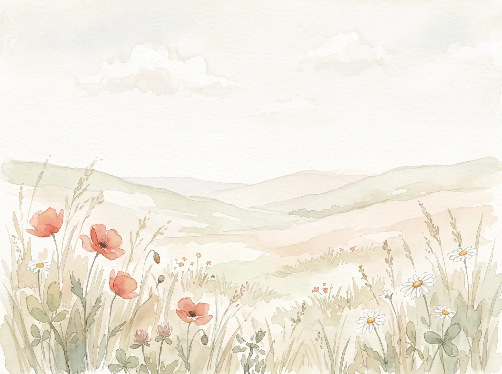
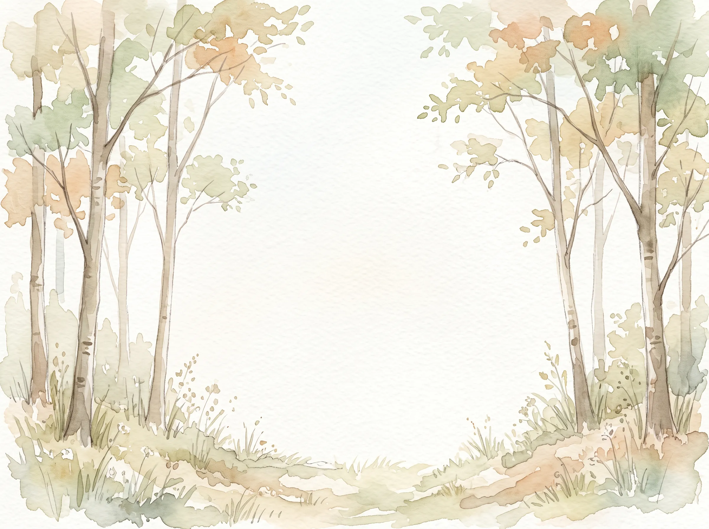

Open models
Open models now rival closed APIs and keep shrinking. What once needed a data center runs on one GPU, soon a laptop.


Connect your agents and apps directly to AI providers.
Nobody sits in the middle.
One company decides which models you can use and who serves them.
It also decides what you pay. Routing and commercial terms sit inside its platform.
A central proxy becomes another party in your request path.
When they change the terms, your workflow, your agents and your costs change overnight.

Open models now rival closed APIs and keep shrinking. What once needed a data center runs on one GPU, soon a laptop.
Claude Code, Codex and hundreds of autonomous workflows consume inference at scale. Agents need service, price and reliability, not a polished UI.
USDC on Base is fast, cheap and widely held. Machine-to-machine payments finally work.
This combination didn’t exist before. Now it does, and it changes what kind of market is possible.
Antseed connects your apps and agents to AI services through a peer-to-peer network.
Providers set prices. You choose by price, speed and trust.

buyersprovidersThe protocol connects independent participants and gives you evidence to choose.
Any OpenAI- or Anthropic-compatible client: curl, an agent or a coding app, pointed at your gateway.
Runs on your machine or a server you control. Holds your API keys, budgets and routing rules.
Providers announce models and prices through peer-to-peer discovery. Your gateway finds them.
The highest-ranked eligible provider under your price and trust policy serves the request directly.
Fund by card or USDC on Base. No crypto needed and no gas fees. Providers settle in USDC on Base.
Service history, identity, stake and verification inform future routing.
| Dimension | Hosted aggregator | Antseed |
|---|---|---|
| Who decides which providers participate | The platform | Anyone can join |
| Where requests go | Through the platform’s servers | Direct to the provider |
| Who holds payouts | The platform, until withdrawal | Provider’s wallet, immediately |
| Can you run your own access layer | No | Yes — self-run gateway, your keys, your rules |
| What happens if the platform changes terms | Every customer is affected | You switch gateways or providers, the network keeps running |
Delivery provenance, model checks and network integrity solve different parts of trust.
Integrate inference through Antseed instead of managing multiple API accounts.
Keep working at market prices instead of waiting for the next billing cycle.
Point an agent at the network and let it choose providers by price, speed and reputation. No API keys per provider, no SaaS account.
Providers quote their own prices. You can compare offers before choosing where to send a request.
Your router can choose another provider as availability, price or trust evidence changes.
Settlement, provider identity and verification records inform recognized usage and future routing.
Provider incentives support participation and trust. The source notes explain staking, recognized usage and the conditions for network buybacks.
On-chain data, independently indexed.
Gross volume settled
$390K
USDC paid to providers to date
Active participants
27,890
27,536 buyers · 272 sellers · 82 DIEM stakers
Models on sale
934
From 270+ independent providers
Sellers settling
272
With on-chain settlement
Tokens consumed
883B
590B paid · 293B free
Median saving
−65%
vs. provider list price
Service health
98%
Reported services healthy
700+ models. Pay per request. No subscription.
List a model, set your price, earn USDC.
You decide which models your agents use, who serves them, and what you pay.
Antseed stats